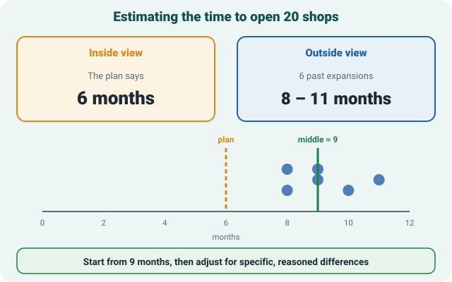

K3 · Problem solving and decision making › Level 5 Leading
Make strategic decisions as a group, with an outside view and a pre-mortem
This lesson completes Sheet 2: Pre-mortem minutes. Print template. It takes Decide with incomplete information (N4) from individual decisions up to decisions by a whole leadership team.
1. Objectives
- Set an estimate from at least 5 similar cases for the cost or time of a major decision.
- Chair a 45-minute pre-mortem and write the pre-mortem minutes.
2. Retrieval warm-up
- Name at least four kinds of work only an executive can do.
- What do the labels D and O mean in the executive calendar?
Answers
- Choose priorities and what not to do; allocate people and money between divisions; design structure and decision rights; prepare successors; maintain outside relationships; watch major risks.
- D: direct reports can do it. O: organisation-level work.
Review: Leading an organisation.
3. Explanation
Major decisions are usually discussed by the leadership team. A group brings more views, but it also has three traps.
- Optimism: plans always look faster and cheaper than reality.
- Deference to the most senior person: when the boss speaks first, everyone follows.
- Groupthink: people with doubts hesitate to speak.
Tool 1. The outside view. Do not estimate only from your own plan. Ask: how long and how much did similar projects really take? This is the idea behind reference class forecasting.

How to do it: find at least 5 completed cases, inside or outside the company. Look at the actual results. Use the middle value as the base estimate. Adjust only for a specific reason.
Tool 2. A group pre-mortem. Before you commit, the chair says: "Imagine it is a year from now and this has failed badly. Why?"
A 45-minute pre-mortem
- 5 minutesState the decision and imagine it has failed.
- 5 minutesEveryone writes reasons alone, no discussion.
- 15 minutesRead reasons in turn. The most senior person reads last.
- 15 minutesChoose the 3 biggest. Each gets a measure and an owner.
- 5 minutesWrite stop signals and a review date.
Writing alone before discussing stops opinions being swept along by the first speaker. The most senior person speaks last so others dare to speak.
A pre-mortem does not aim to cancel the decision. It makes the decision sturdier, with fallbacks and a stopping point.
4. Workplace example
Hypothetical scenario. A chain of mini-supermarkets plans to open 20 new stores in a new region. The plan says 6 months.
The operations director, Nora, reviews the company's 6 previous expansions. They took 8 to 11 months. The middle is about 9 months.
The leadership team sets a base estimate of 9 months. They adjust it to 8 months only because a site-finding team is already in place.
Then Nora chairs a pre-mortem. The CEO reads their reasons last. The three biggest reasons are chosen:
- Not enough store managers. Measure: train 10 deputy managers from month one. Owner: HR head.
- Leases signed late. Measure: sign in batches of 5 sites. Owner: head of site development.
- Fresh food spoils because the warehouse is far. Measure: test 3 stores before opening more. Owner: supply chain director.
Stop signal: if the first 3 stores lose money for more than 2 months in a row, meet again. Review date: end of month 3.
Why this works: the estimate rests on real data. Reasons for failure are voiced before committing, and each has an owner.
5. Practice
Hypothetical scenario. You are deputy CEO of a software company. The leadership team plans to replace the accounting system in 4 months.
Do two things: (1) Explain how you would find 5 similar cases. (2) Write 3 possible reasons for failure, each with a measure and an owner.
Hint 1
Similar cases could be the company's past major software replacements. You could also ask the implementation partner about clients of the same size.
Hint 2
Think about people, data and timing. What is the risk of switching during year-end closing?
Model answer
- Reference class: 3 software replacement projects at the company in the past 5 years; 2 clients of the same size introduced by the implementation partner. Record the actual duration of each.
- Reasons for failure: - Old data is wrong and does not transfer cleanly. Measure: clean the data a month before. Owner: chief accountant. - It clashes with year-end closing. Measure: run both systems in parallel through one period close. Owner: finance director. - Staff are not used to it. Measure: role-based training, with on-site support for 2 weeks. Owner: project lead.
(The details are hypothetical.)
6. Self-check
Choose an answer. Every option has an explanation.
Question 1. The plan for a new warehouse says 10 months. Five similar warehouse projects in the industry took 13 to 18 months. What should the base estimate be?
-
Not quite. This is the inside view. Every team thinks it is faster, so plans are usually optimistic.
-
Correct. Correct. The outside view uses real data as the starting point.
-
Not quite. Always taking the worst case is also a bias. Start from the middle, then adjust with reasons.
Question 2. In a pre-mortem, the CEO wants to speak first to set the direction. You are chairing. What should you do?
-
Not quite. When the most senior person speaks first, others tend to follow. Other reasons get lost.
-
Correct. Correct. Writing alone and having the most senior person speak last brings out more views.
-
Not quite. The CEO's view is still valuable. The issue is only the order of speaking.
Question 3. After the pre-mortem, the group has 12 reasons for failure. What is the right next step?
-
Not quite. A pre-mortem does not aim to cancel the decision. It aims to make it sturdier.
-
Correct. Correct. Reasons only help when they become actions with owners.
-
Not quite. A list without owners usually leads to no action.
Question 4. A colleague says the pre-mortem has been proven to make decisions 30% more accurate. Which comment is correct?
-
Not quite. The original research only measured how many reasons people gave. It did not measure decision accuracy.
-
Correct. Correct. Knowing the level of evidence lets you use the tool without overpromising.
-
Not quite. There is experimental support for generating reasons. It is just not enough to claim accuracy.
7. Reflection
- Was your leadership team's last major decision estimated from the plan or from similar cases?
- In your meetings, who usually speaks first? What effect does that have?
8. Real-world application
In the next 7 days, choose a major decision about to be made. Find at least 5 similar cases. Chair a pre-mortem and complete Sheet 2.
Level of evidence. Outside view: Flyvbjerg (2006), Project Management Journal 37(3), building on Kahneman and Tversky's decision theory. Pre-mortem: Klein (2007), Harvard Business Review, September 2007. This is a practice article, not peer-reviewed research. The experimental basis for the pre-mortem is Mitchell, Russo and Pennington (1989), Journal of Behavioral Decision Making 2(1). It found that people give more reasons when they treat an outcome as having already happened. It does not show that decisions get better.
9. Metadata
| skill | K3 · Problem solving and decision making |
|---|---|
| level | Level 5 · Leading |
| group | N6 |
| framework_map | UK Civil Service Success Profiles: Making Effective Decisions; APS Integrated Leadership System: Shapes strategic thinking; WEF: Analytical thinking; SkillsFuture CCS: Decision Making; CSfW: 3b Make decisions (reference only) |
| original | Vietnamese version |
| updated | 2026-11-14 |
Finish the lesson
Mark it as done and the site suggests reviews after 1, 3 and 7 days. The data stays on your device only.
Suggested reviews: